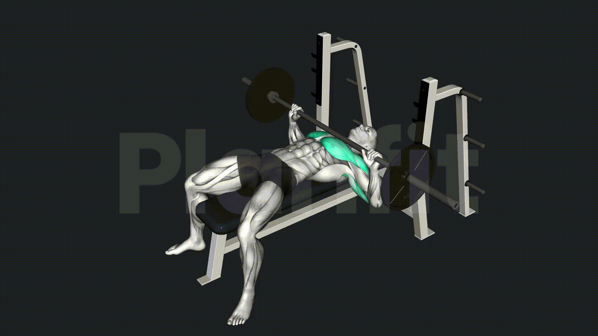

벤치 프레스
-
운동효과
- 대흉근의 발달 및 삼각근과 상완삼두근 자극
-
운동방법
- 벤치에 누워 두 발을 바닥에 고정해주세요.
- 어깨를 뒤로 당긴 후 고정하여 어깨가 가슴보다 뒤에 위치하게 합니다.
- 허리는 자연스러운 아치 모양이 되게 해주세요.
- 어깨너비보다 조금 넓게 바벨을 두 손으로 잡아주세요.
- 허리와 어깨를 고정한 채로 바벨을 들어 바벨을 가슴 위에 위치하게 합니다.
- 가슴 아래쪽에 바벨이 닿도록 천천히 바벨을 내려주세요.
- 이때, 팔뚝(전완)은 바닥과 수직이 되어야 합니다.
- 천천히 바벨을 들어 올려 시작 자세로 돌아오세요.
-
호흡법
- 바벨을 내리는 동안 숨을참고, 바벨을 위로 밀어 올릴 때 숨을 내쉬는 호흡법 사용을 사용합니다.
-
주의사항
- 바벨이 가슴에 닿지 않으면 무리하지 않고 가능한 만큼만 내려주세요.
- 어깨가 가슴보다 앞으로 오게 되면 어깨에 무리가 갈 수 있으니 주의해주세요.
- 엉덩이가 벤치에서 떨어지지 않도록 주의해주세요.